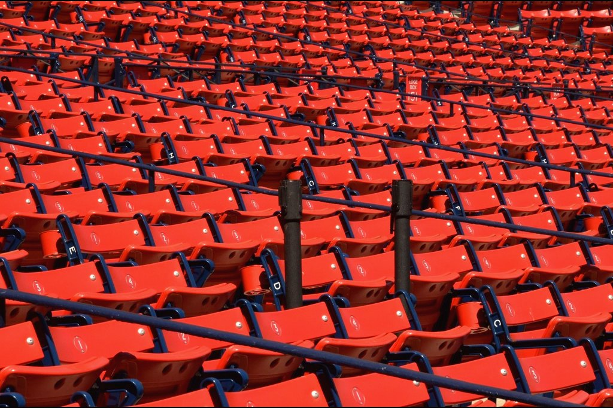

Sports / Road Game Desk
Hebrews 12:1-3
Scripture in full
World English Bible
The race set before us
Away Team
Advantage

The visitors' end, two hours before anyone arrives.
Hebrews 12:1-3 / World English Bible
1Therefore let us also, seeing we are surrounded by so great a cloud of witnesses, lay aside every weight and the sin which so easily entangles us, and let us run with perseverance the race that is set before us, 2looking to Jesus, the author and perfecter of faith, who for the joy that was set before him endured the cross, despising its shame, and has sat down at the right hand of the throne of God. 3For consider him who has endured such contradiction of sinners against himself, that you don’t grow weary, fainting in your souls.
Road report
| Field condition | Unfamiliar |
| Weight carried | Set down |
| Home-field dependent | No |
Endurance
| Witnesses | Great cloud |
| Eyes fixed on | The author |
| If weary | Consider him |